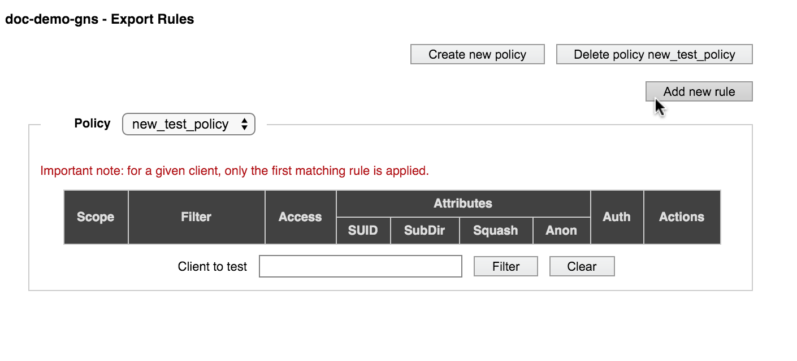

VServer > Export Rules

This page gives you the ability to customize and create new export policies, which control client access to core filer exports.
Export policies are made up of export rules, applied in order from top to bottom. The system automatically sorts rule by scope so that they will be applied in this order:
- Host
- Network
- Netgroup
- Default (no scope filter, matches all clients)
However, if you have multiple rules at one scope, the order might be significant.
If you have not modified the default export policy (named default), it provides full access to the exported filesystem.
If your cluster uses more than one vserver, you must configure export rules for each vserver separately; export rules and policies cannot be copied or moved between vservers.
Select a vserver by using the drop-down selector in the side menu (1) to show its policies.
Considerations for Customizing Export Policies
Before starting to create or modify export rules and policies, consider these things.
- Rules can be created within an existing policy only. Before creating a new rule, you should decide whether to apply it to the default policy or to create a new policy. Follow the steps in Creating An Export Policy if you want to add the rule to a new policy.
- Rules in an export policy are applied in order from host to default, but rules within one scope cannot be re-ordered after they are created. New rules are always added to the top of the group for their scope. So, for example, if you have two rules that use network filters, you should create a more general rule before a more specific rule so that the specific case is tested before the general case when the policy is applied.
- If you use netgroups, the system immediately polls for changed netgroup information if you change an export policy (add, modify, or delete a rule) or change which policy applies to an export (on the Export Policies page).
Creating An Export Policy
To create a new policy, click the Create New Policy button (3) at the top right of the page.
Enter a name for the policy in the pop-up window.

The new policy is created and automatically selected so that you can add rules to it.
Follow the procedure described in Customizing an Export Policy to add rules to the new policy.
{kind=link}
Customizing an Export Policy
You can add rules to an export policy, or delete rules to change its effects. You also can change an existing rule.
The steps in creating or modifying a rule are similar.
Select the policy to modify in the drop-down list at the top of the table.
- To modify an existing rule, click the Modify button in the Actions column for that rule.
- To delete an existing rule, click the Delete button in its Actions column.
- To create a new rule, click the Add new rule button (4) at the top of the page. The new rule will be created at the top of the list for that rule scope - that is, it will be evaluated first among all rules with the same filter when the policy is applied.
When adding or modifying a rule, a detailed panel appears above the list of rules so that you can configure the following options. (The panel is labeled either Add New Rule Definition or Modify Rule Definition depending on the situation.)
Remember to click the Submit button after configuring all of the settings for the rule. The new rule will appear at the top of the list in its scope category.
The sections below explain the options for each setting.
Rule Scope and Filter Value
The scope and filter values define which clients will be affected by this export rule.
The scope of the rule sets the method for filtering clients, and the filter element sets the values to match. For example, you can use a rule that filters by specific host IP addresses, or filter all clients from a particular network.
Scope Values
Rules in a policy are automatically ordered by scope, from most specific (host) to least specific (default). Within each category of scope, new rules appear above older rules.
Possible values include the following:
- host – The rule matches a specified host (client).
- network – The rule matches clients in a specified network or subnet.
- netgroup – The rule matches clients in a specified netgroup.
- default – The rule matches all clients.
Filter Values
The filter format depends on the rule’s scope, as follows:
for host: The IP address or fully qualified domain name of the host to which the rule applies
for network:
The network or subnet to which the rule applies, specified in one of the following formats:
- IP_address/mask_length (for example,
192.168.0.1/24) - IP_address/netmask (for example,
192.168.0.1/255.255.255.0) - Network name, preceded by an equals (=) symbol (for example,
=EXAMPLE.COM)
- IP_address/mask_length (for example,
for netgroup:
Netgroup name, preceded by the @ (at) symbol (For example, for a netgroup named BUILDHOSTS, enter
@BUILDHOSTSinto the field.)for Default:
The asterisk (*) character, specifying that no filtering is applied.
Access Level
The access level setting determines what permissions are granted to clients that match the filter.
Use the Allowable access drop-down list to choose from these values:
- no access
- read-only
- read/write
User ID Settings
The User ID Mapping and Anonymous User settings determine how user identifiers (UIDs) are sent to the core filer.
For security reasons, you might want to change the UID on requests to the core filer export. The most common reason is to prevent a user with special privileges on the client system (for example, the root user) from gaining the same privileges on the back-end system.
Use the UID mapping list to choose how to handle client-side user identifiers. Options are:
- map root to Anon – Client requests from user ID 0, typically the root user, are mapped to the anonymous user for requests to the core filer export. This is commonly known as “root squashing.”
- map all to Anon – Client requests from all users are mapped to the anonymous user.
- no UID mapping - No user-ID mapping is performed; UIDs are passed verbatim from the client to the core filer. A root user from the client will have access as a root user on the core filer.
Use the Anon drop-down list to configure the user ID sent to the core filer from an anonymous user. Options include the following:
- -2 (nobody)
- 65534 (nobody)
- -1 (no access)
- 65535 (no access)
- 0 (unprivileged root)
SUID/SGID
Check the box labeled Allow SUID bits within this export if you want to allow files on the core filer to change user IDs (SUID) and group IDs (SGID) upon client access. Typically, SUID and SGID bits are used to temporarily increase a user’s privileges in order to accomplish a task related to the file.
Submount Access
Check the box labeled Allow submounts within this export to let clients also access subdirectories of the core filer export point.
Consider the security implications of this setting before changing it - in most cases, the access controls set on the parent directory cascade to the subdirectory, but there can be situations where allowing submount access exposes files unintentionally.
Authentication
In the Authentication Flavors area, you can set the type of authentication for the core filer export. Choose either UNIX/SYS (the default) or Kerberos.
Read Setting Up Kerberos Authentication to learn more about enabling Kerberos authentication for a core filer export.
Deleting an Export Policy
To permanently remove an export policy, select it fron the list on the Export Rules page. If it is eligible for deletion, a Delete policy button appears in the upper right corner of the page.
Note
You cannot remove the default export policy.
Testing Client Access
You can test an export policy before applying it to an export. Use the Client to test field at the bottom of the Export Rules page to enter a client IP address or hostname, then click Filter. The test utility displays the first matching rule in the current policy for that client.